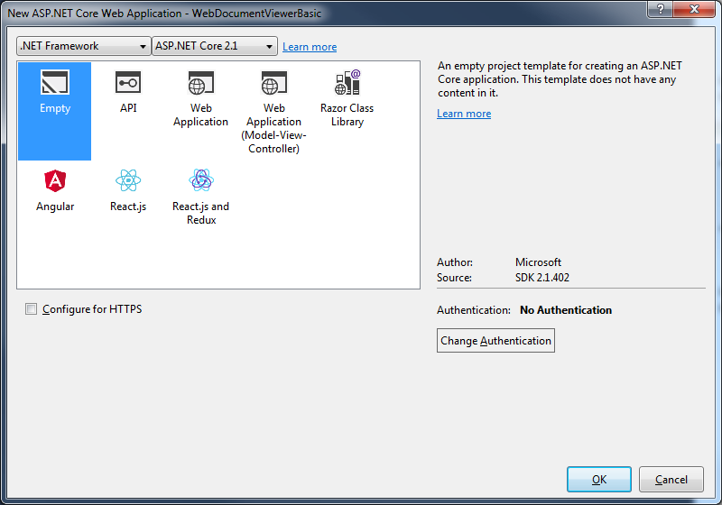

Starting with DotImage 11.0 Web Document Viewer supports ASP.NET Core framework. This topic tells you how to create a sample application using Nuget. It's quite similar to the Demo Application, but with some differences specific to the new framework.
Follow these steps to create a new web project. This guide takes you through setting up a basic web page containing an embedded Web Document Viewer and displaying an initial document in it.
This guide is intended to be followed precisely, but it is not supposed to give you a solution that is ready to deploy. Once you have succeeded building the example project, you can begin modifying it to fit your organization.
Set up a new project
A web viewer application requires these essential elements:
- A client-side HTML page containing the document viewer.
- A server-side startup class that will be used for configuring our web host.
- WebDocumentViewer resources files.
Note It's highly recommended to use the version 15.8 or newer of Visual Studio 2017 for this demo.
Start by creating a new ASP.NET Core Web Application (.NET Framework) in Visual Studio targeting .NET 4.7.1 or newer.
Note In the following instructions the project is called WebDocumentViewerBasic.
Choose Empty template on the following window

Visual Studio automatically will create you a project with "Hello world" application. It already has a Startup class and
all necessary NuGet packages for running this application is self-hosted, of course, you can use IIS Express instead.
Add NuGet packages for server-side
Add the NuGet package Atalasoft.dotImage.WebControls.Core.x86 it automatically downloads all necessary dependencies on other DotImage and ASP.NET Core components. If you plan to run your application on a 64-bit server, you should use the package Atalasoft.dotImage.WebControls.Core.x64.
Since the Web Document Viewer uses a file system to access the images to show on the page, you also need the package Microsoft.AspNetCore.StaticFiles.
Add packages for client-side
Web Document Viewer JS package can be downloaded using npm. (Bower is maintained and its support was deprecated in DotImage 11.4 update. It's highly recommended to use npm packages).
Add npm packages for client-side
To add npm packages you need to create a package.json from npm Configuration file template, add there a web-document-viewer package, and save the file. After that the Visual Studio installs this package with all dependencies to node_modules folder in project root. This folder can not be accessed from the web application without additional code modifications on server-side, but for security reasons it's totally okay. You need to place all necessary files from this folder to wwwroot\<subfolder> path, it can be done manually of with using help of scripts.
Also, if you use npm version 5 or higher, don't forget to commit package-lock.json file in order to be sure, that every time the same set of packages with same versions will be installed.
Configure npm packages deployment
To make life easier with scripts deployment we add some packages in our package.json file. First of them is gulp, using it we create several tasks that will be run on every build target "Build" and "Clean". The second package is rimraf - it's needed for easy folder removal on "Clean". As a result, package.json file could be look like this:
{
"version": "1.0.0",
"name": "web-document-viewer-basic",
"private": true,
"devDependencies": {
"web-document-viewer": "~11.4.0",
"gulp": "^4.0.0",
"rimraf": "^2.0.0"
}
}
After that, when all packages are installed, you need to add a gulpfile.js, Visual Studio doesn't provide a special template for it, so you can use a generic template for JavaScript files, or don't use anything. And there we add all necessary code, that will help us to manipulate with scripts files from node_modules folder and copy them to wwwroot\lib. See the code below:
/// <binding BeforeBuild='build' Clean='clean' />
"use strict";
const gulp = require("gulp");
const rimraf = require("rimraf");
const libPath = 'wwwroot/lib/'; //Path where all dependencies should be copied
const nodeModules = "node_modules/"; //Folder where node modules stored by default
//List of dependencies for our application
//src - list of files of wildcard paths to files to copy
//dest - folder name of path relative to libpath variable where files should be copied
const dependencies = [
{
src: ["jquery/dist/jquery.js", "jquery/dist/jquery.min.js"],
dest: "jquery"
},
{
src: ["jquery-ui-dist/jquery-ui.js", "jquery-ui-dist/jquery-ui.min.js"],
dest: "jquery-ui"
},
{
src: ["jquery-ui-dist/jquery-ui.css", "jquery-ui-dist/jquery-ui.min.css"],
dest: "jquery-ui/css"
},
{
src: ["raphael/raphael.js","raphael/raphael.min.js"],
dest: "raphael"
},
{
src: ["clipboard/dist/*"],
dest: "clipboard"
},
{
src: ["web-document-viewer/*.js", "web-document-viewer/*.css"],
dest: "web-document-viewer"
},
{
src: ["web-document-viewer/images/*"],
dest: "web-document-viewer/images"
}
];
function getSourcePaths(rootpath, paths) {
return paths.map(path => rootpath + path);
}
gulp.task("build",
(done) => {
dependencies.forEach(dep => {
gulp.src(getSourcePaths(nodeModules, dep.src)).pipe(gulp.dest(`${libPath}/${dep.dest}`));
});
done();
});
gulp.task("clean",
(done) => {
return rimraf(libPath, done);
});
gulp.task("rebuild", gulp.series("clean","build"));
Besides comments in the code, there are several notes about it:
- The first line of this code is a special hint for
Task Runner Explorerthat's built-in Visual Studio. It tell VS to run gulp tasks before MSBuild targets "Build" and before "Clean" targets. - The list of dependencies in this sample is configured manually, and needs to be carefully revised when you upgrade some of packages, in order to don't miss any important file.
- The task "rebuild" doesn't attached to any MSBuild target, and could be launched manually from
Task Runner Explorerwindow.
That's all, now when you build your project, the lib folder will be added to wwwroot with all necessary scripts and resources, and application can easily access to them without any hacks.
Note You can manipulate by list of files, and for instance don't copy unminified resources at all, which makes your application smaller.
Prepare Startup class
Before we can use DotImage middlewares, we need to configure our application for them.
Configure method
How was mentioned before, Web Document Viewer needs to access to the file system.
So, we need to add middlewares to work with files. To do this, you need to add following strings at the beginning of Startup.Configure method in Startup.cs file:
app.UseDefaultFiles();
app.UseStaticFiles();
Also, you need to delete "Hello world" code string, since we don't need it.
The other thing we need to do is to add a PdfDecoder. Our server will use it for rendering PDF files.
You can do this by writing the next code at the beginning of Program.Main method in Program.cs file:
RegisteredDecoders.Decoders.Add(new PdfDecoder());
Set up server-side components
To set up server-side components you need to add the WDV middleware, which is responsible for communicating with the Web Document Viewer embedded in your page.
Add a new line of code at the end of Startup.Configure method:
app.Map("/wdv", wdvApp => { wdvApp.RunWebDocumentViewerMiddleware(); });
That's all! If you want to customize this middleware, you can choose another overload of the method
RunWebDocumentViewerMiddleware that accepts implementation of the interface IWebDocumentViewerCallbacks.
Set up the viewer control
The setup for web document viewing just requires placing some JavaScript, CSS, and HTML into your page. And the first step is to add the new page to your web application. To do this, add a new HTML file with name index.html to the wwwroot folder.
Include the web resources
Open index.html and replace its head section with the following script and link tags to include the necessary Web Document Viewer code and dependencies.
npm resources location
<head>
<!-- Scripts for Web Viewing -->
<script src="lib/jquery/jquery.min.js" type="text/javascript"></script>
<script src="lib/jquery-ui/jquery-ui.min.js" type="text/javascript"></script>
<script src="lib/raphael/raphael.min.js" type="text/javascript"></script>
<script src="lib/clipboard/clipboard.min.js" type="text/javascript"></script>
<script src="lib/web-document-viewer/atalaWebDocumentViewer.js" type="text/javascript"></script>
<!-- Style for Web Viewer -->
<link href="lib/jquery-ui/css/jquery-ui.min.css" rel="stylesheet" />
<link href="lib/web-document-viewer/atalaWebDocumentViewer.css" rel="stylesheet" />
</head>
Configure the control
The web viewing control needs to be initialized and configured to set up connections to the right middleware, specify behavior for events, and so forth. It can be done with another block of JavaScript, either included or pasted directly within your page's head below the previously added dependencies.
<script type="text/javascript">
var _viewer;
// Show status and error messages
function appendStatus(msg) {
var stat = $("#status");
stat.append(msg + "<br>");
}
// Initialize Web Viewing
$(function () {
try {
// Initialize Web Document Viewer
_viewer = new Atalasoft.Controls.WebDocumentViewer({
parent: $('.atala-document-container'),
toolbarparent: $('.atala-document-toolbar'),
'allowforms': true,
'allowannotations': true,
'savepath': '.',
'annotations': {
'atala_iuname': 'mm'
},
serverurl: 'wdv'
});
// Uncomment the following 2 lines if the toolbar buttons should be displayed without text
//$('.atala-ui-button .ui-button-text').html(' ');
//$('.atala-ui-button').css({ height: '28px', width: '28px' });
loadFile();
} catch (error) {
appendStatus("Thrown error: " + error.description);
}
});
function loadFile() {
_viewer.OpenUrl($('#FileSelectionList').val(),'');
}
</script>
Several additional options and handlers can be specified in the initialization routines for viewing. However, this example represents the minimal configuration necessary for web document viewer. Additional information can be found in the blog post about Web Document Viewer.
Add the UI
Replace the empty body section with the following HTML to create a basic viewer UI.
It includes the Web Document Viewer, drop-down box to choose a file to show.
<body>
<h1>Kofax Web Document Viewer Demo</h1>
<form id="WDVForm" runat="server">
Select File to display:
<select ID="FileSelectionList" onchange="loadFile();">
<!-- See the NOTE below -->
<option value="images/Test.tif">Test.tif</option>
<option value="images/Test.pdf">Test.pdf</option>
<!-- END NOTE -->
</select>
<div>
<div class="atala-document-toolbar" style="width: 800px;"></div>
<div class="atala-document-container" style="width: 800px; height: 600px;"></div>
</div>
<div id="status"></div>
</form>
</body>
Note The option tags 'value' property points to real files in 'wwwroot\images' folder. Thus, you need to add manually files with the same names to this folder.
Tune-up application by your demands
Unlike the classic ASP.NET model handlers, DotImage middlewares for ASP.NET Core doesn't provide any settings for compression and response caching. Because, we want to help you build an application, where you can decide what are you want to do, what additional features you want to use. So, Web Document Viewer middleware forced not to add any cache control headers, and also doesn't try to use GZip or Deflate algorithms for compression. However, you can simply enable these feature by using Microsoft NuGet packages Microsoft.AspNetCore.ResponseCaching and Microsoft.AspNetCore.ResponseCompression.
Response caching
Using the Microsoft.AspNetCore.ResponseCaching package and this MSDN article you can simply add new middlewares to enable response caching in this sample.
public void ConfigureServices(IServiceCollection services)
{
...
services.AddResponseCaching(); //configures response caching support with default settings
...
}
public void Configure(IApplicationBuilder app, IHostingEnvironment env, ILoggerFactory loggerFactory)
{
...
app.UseResponseCaching(); //adds response caching middleware
...
app.Map("/wdv", wdvApp =>
{
// adds a custom middleware to setup caching header.
// in this case we add it right before WebDocumentViewer middleware
wdvApp.Use(async (context, next) =>
{
context.Response.GetTypedHeaders().CacheControl = new CacheControlHeaderValue()
{
// You can use any other parameters that you need
Public = true,
MaxAge = TimeSpan.FromSeconds(10)
};
await next();
});
wdvApp.RunWebDocumentViewerMiddleware();
});
}
Note It's not necessary to add a 'Vary' header.
What's important that you don't need to specify VaryByQueryKeys property for Atalasoft query parameters.
Because WebDocumentViewer middleware detects caching feature and setups this property by adding (not rewriting)
all necessary query parameters to the collection.
Response compression
Response compression is another useful feature that you can setup pretty simple, by adding a NuGet package and writing some lines of code to setup it. We need the Microsoft.AspNetCore.ResponseCompression package and this article as a reference guide.
public void ConfigureServices(IServiceCollection services)
{
...
services.AddResponseCompression(options => //configures response compression
{
options.Providers.Add<GzipCompressionProvider>(); //adds gzip compression provider
//comment this line to not compress images, that are already compressed by PngEncoder.
options.MimeTypes = ResponseCompressionDefaults.MimeTypes.Concat(new[] {"image/png"}); //adds mime-type "image/png" and default mime-types to the collection of mime-types that should be compressed
});
...
}
public void Configure(IApplicationBuilder app, IHostingEnvironment env, ILoggerFactory loggerFactory)
{
...
app.UseResponseCaching(); //adds response caching middleware
...
app.Map("/wdv", wdvApp =>
{
// adds a custom middleware to setup compression.
// in this case we add it right before WebDocumentViewer middleware
wdvApp.Use(async (context, next) =>
{
await next();
});
wdvApp.RunWebDocumentViewerMiddleware();
});
}
Well.. custom middleware is empty! But in the MSDN article, you've been told that you need to add a "Vary" header. It's because DotImage always adds this header for you. But don't be afraid, if you add this header before DotImage, we don't break your application, and don't rewrite it with our value.
CORS support
One more feature that could be very useful is the CORS (Cross-Origin Requests). Hopefully, Microsoft for this feature support has a NuGet package the Microsoft.AspNetCore.Cors. And also, they have an MSDN article with instructions how to use it.
Well, it's quite easy to use we need to add CORS support
public void ConfigureServices(IServiceCollection services)
{
services.AddCors();
}
And setup it in the request pipeline
public void Configure(IApplicationBuilder app, IHostingEnvironment env, ILoggerFactory loggerFactory)
{
...
// Shows UseCors with CorsPolicyBuilder.
app.UseCors(builder =>
builder.WithOrigins("http://..."));
...
}
Web Document Viewer CORS demonstration
To demonstrate how it works, the project WebDocumentViewerCors was created. It's a copied original project, but without any additional features,
like compression and response caching. The most different parts contained in the Main method:
public static void Main(string[] args)
{
var host = new WebHostBuilder()
.UseKestrel()
.UseContentRoot(Directory.GetCurrentDirectory())
#if !DEBUG
// I want to use specific host and port number,
// when we launch this application built in
// 'Release' configuration.
.UseUrls($"http://localhost:5000")
#endif
.UseIISIntegration()
.UseStartup<Startup>()
.UseApplicationInsights()
.Build();
host.Run();
}
The Startup class, where methods ConfigureServices and Configure has the next lines:
public class Startup
{
public void ConfigureServices(IServiceCollection services)
{
services.AddCors();
}
public void Configure(IApplicationBuilder app, IHostingEnvironment env, ILoggerFactory loggerFactory)
{
...
app.UseCors(builder => builder
// This address can be found in Properties/launchSettings.json
// Comment this line, to disable CORS support for this origin, so your browser
// will show an error in its console about it.
.WithOrigins("http://localhost:37510")
// For this demo we allow any header, but you can setup your own and specific headers
.AllowAnyHeader()
// For this demo we allow any method, however you can use more strict conditions
.AllowAnyMethod())
.UseDefaultFiles()
.UseStaticFiles();
...
}
}
Also, we need slightly adjust our client JavaScript code. We need to change a servevrurl property for WebDocumentViewer control, so the JS API will
send requests to the different domain:
// Initialize Web Viewing
$(function () {
try {
// Initialize Web Document Viewer
_viewer = new Atalasoft.Controls.WebDocumentViewer({
...
serverurl: 'http://localhost:5000/wdv'
});
...
} catch (error) {
appendStatus("Thrown error: " + error.description);
}
});
Also, our project contains one more interesting file FolderProfile.pubxml which placed in the folder Properties/PublishProfiles. It's an XML file
that provides information about publishing profile. By default, it builds project in the Release configuration and publishes a web application to the
local folder bin\Release\PublishOutput.
Note This demo project will not work properly in the Internet Explorer because it does not consider the port when comparing origins.
To see how demo application works, you should do next:
- Publish this application - at this step, demo project will be built in
RELEASEconfiguration, and all its contents with all necessary dependencies will be copied to the `bin\Release\PublishOutput' folder. - Open the output folder and launch
WebDocumentViewerCors.exe- it launches a console application, that hosts your application on thehttp://localhost:5000endpoint. - Return to the Visual Studio and start a debug session for
WebDocumentViewerCorsproject in theDEBUGconfiguration - your local browser should open the page with the sample - Open
Developer Toolsfor the sample page in a browser and selectNetworktab. - On the opened page click
Save Changesbutton on the Web Document Viewer tool bar. - In the
Networktab in browser Developer tools, you should see the next request forataladocsavemethod (Headers highlighted by red are CORS specific):
In the code before, I propose to comment line WithOrigins(...). If you do this and repeat all steps to launch sample, then, after click on Save Changes button,
you will see the next image:
It happens because your published server doesn't allow requests from any origin. And browsers, like Chrome, will show you the error in console, despite on response code 204.
Web Document Viewer event handling
Often it is necessary to change the default behavior of Web Document Viewer. Classic ASP.NET handlers offered customization options through public events. It is not possible with new ASP.NET Middleware concept, therefore we provide different customization mechanism for ASP.NET Core based on callback interface IWebDocumentViewerCallbacks. Here we'll give an example how the save operation can be customized to add a possibility to save the documents in Pdf/A format.
At first, slightly modify the client part. Add the checkbox which will determine if document should be saved as Pdf/A or not.
<div>
<label for="savePdfa">Save as PdfA</label>
<input type="checkbox" id="savePdfa"/>
</div>
To pass the checkbox value to the server part the beforehandlerrequest event can be used. It is necessary to subscribe to this event and add the checkbox value to docsave request.
_viewer.bind({
'beforehandlerrequest':function(e){
if (e.request.type === 'docsave') {
e.request.data.asPdfa = $('#savePdfa').prop('checked');
}
}
})
Then, configure the server part of our application. Create a new class MyWdvCallbacks derived from the WebDocumentViewerCallbacks class in a new file. WebDocumentViewerCallbacks is the abstract class with empty implementations of IWebDocumentViewerCallbacks interface methods. It allows to override required events only to customize the events handling. In our case we should override DocumentSave method. As result MyWdvCallbacks.cs file should look like that:
internal class MyWdvCallbacks : WebDocumentViewerCallbacks
{
private IHostingEnvironment _env;
public MyWdvCallbacks(IHostingEnvironment env)
{
_env = env;
}
public override void DocumentSave(DocumentSaveEventArgs docSaveArgs)
{
if (docSaveArgs.SaveFileFormat.Equals("pdf"))
{
var asPdfa = bool.Parse(docSaveArgs.Params["asPdfa"]);
if (asPdfa)
{
docSaveArgs.PreventDefaultSaving = true;
var encoder = new PdfEncoder
{
DocumentType = PdfDocumentType.PdfA1b
};
var imagesource = docSaveArgs.ImageSource;
var saveFolder = Path.Combine(_env.WebRootPath, docSaveArgs.SaveFolder, "pdfas");
var mappedSaveDocPath = Path.Combine(saveFolder, docSaveArgs.FileName);
if (!Directory.Exists(saveFolder))
Directory.CreateDirectory(saveFolder);
using (Stream documentOut = File.OpenWrite(mappedSaveDocPath))
{
encoder.Save(documentOut, imagesource, null);
}
}
}
}
}
Here, the parameters of docsave request is checked and if document should be saved as Pdf and request contains asPdfa flag, the default save operation will be prevented and the instance of PdfEncoder class with corresponding setting will be created. The file will be saved to pdfas subfolder in Pdf/A format.
Now we can supply our custom implementation of IWebDocumentViewerCallbacks interface during middleware registration. To do this, open Startup.cs file and change the call of RunWebDocumentViewerMiddleware method in the following way:
...
wdvApp.RunWebDocumentViewerMiddleware(new MyWdvCallbacks(env));
...
Now, if you can start the application and check that it save Pdf files in the Pdf/A format if Save as PdfA checkbox is checked in.
For more information about methods available through IWebDocumentViewerCallbacks interface read the documentation shipped with Atalasoft DotImage or its online version.